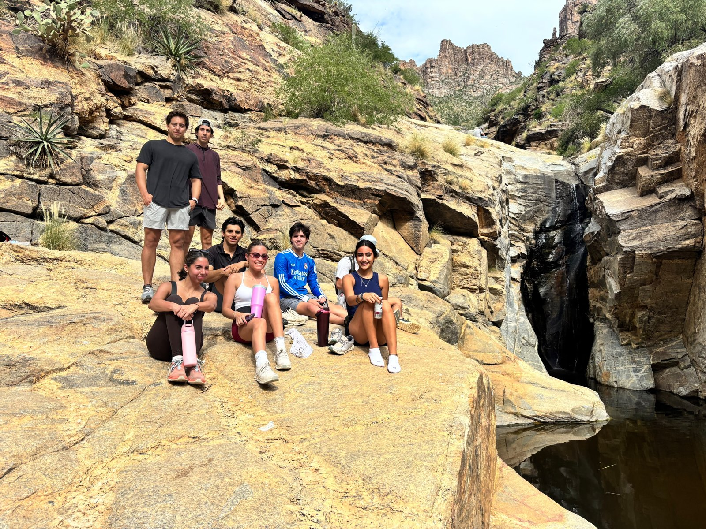
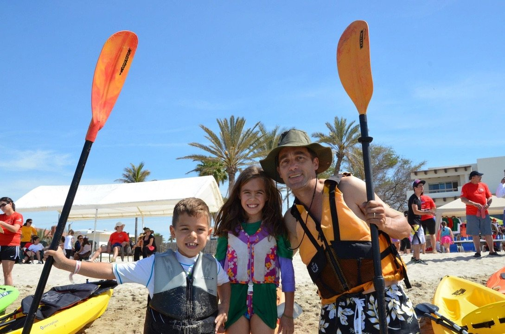
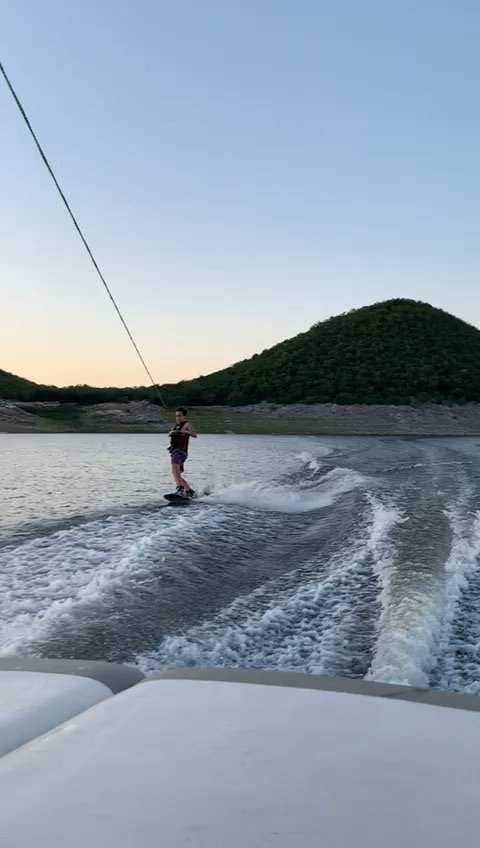
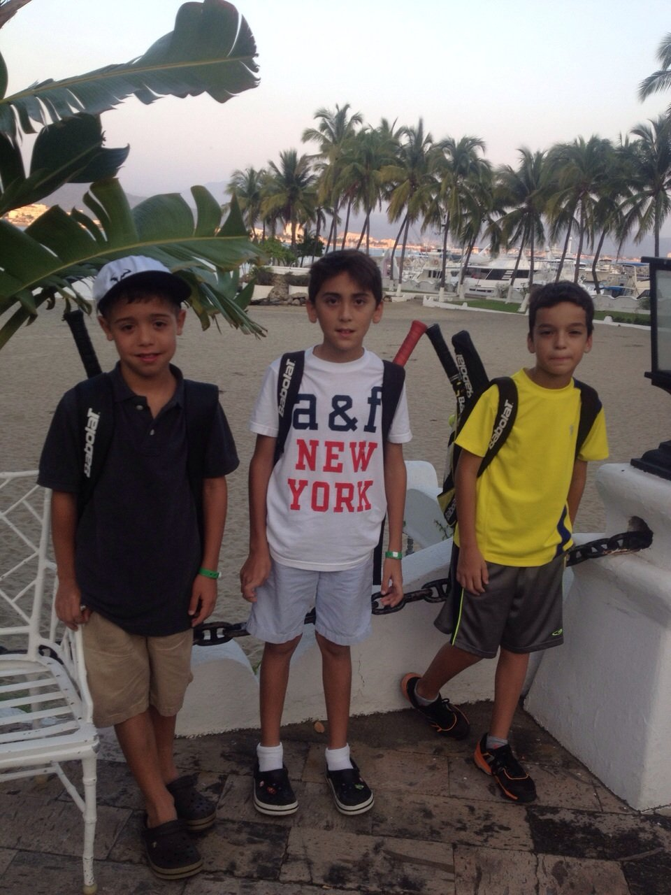
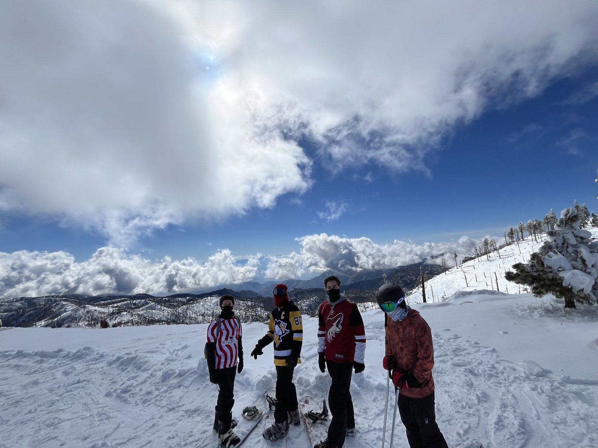
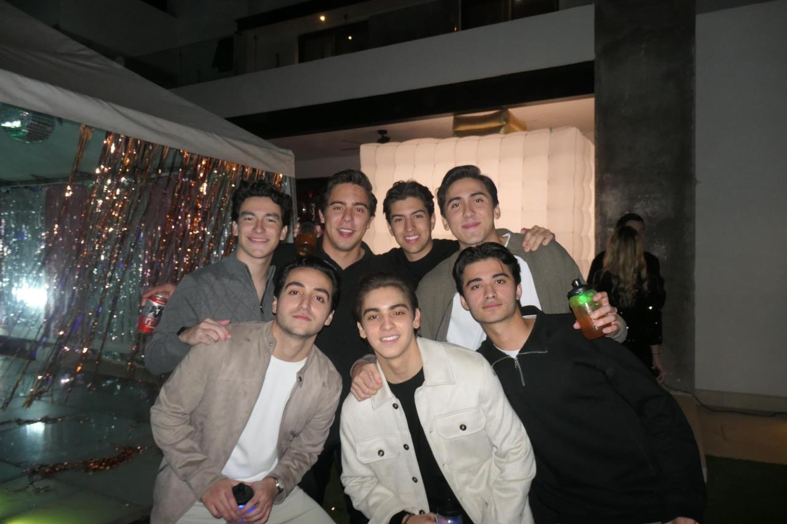
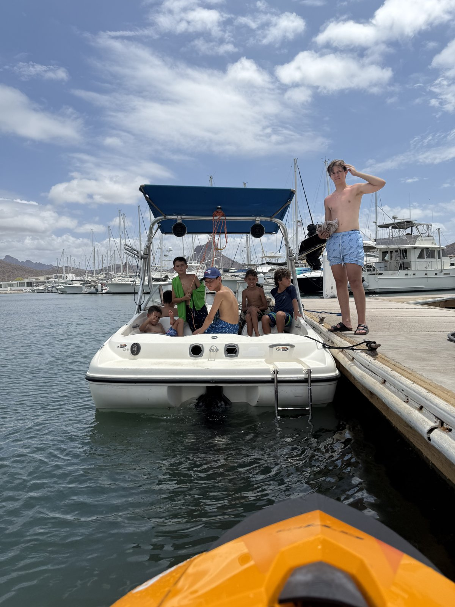
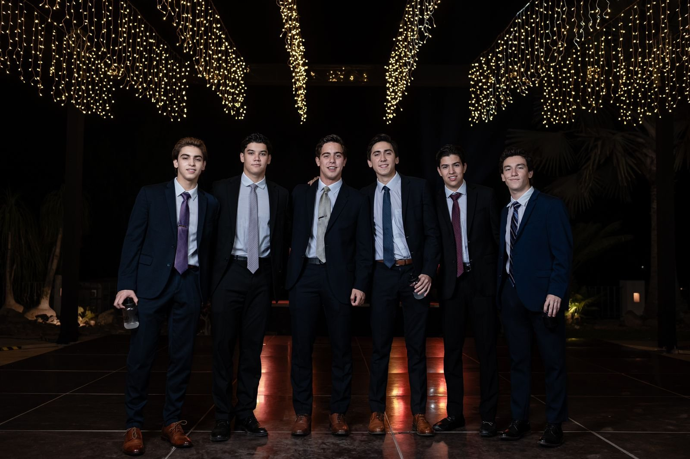
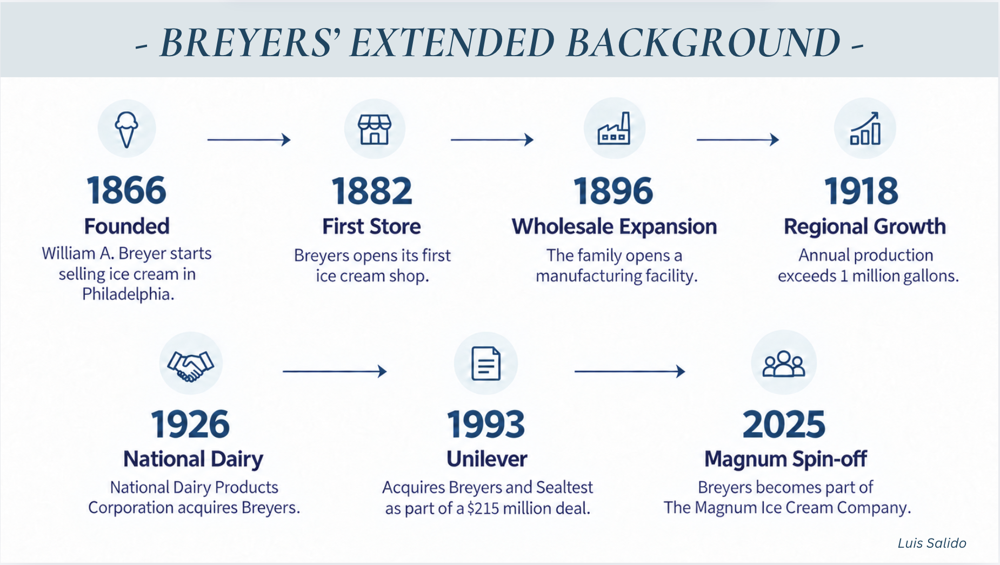
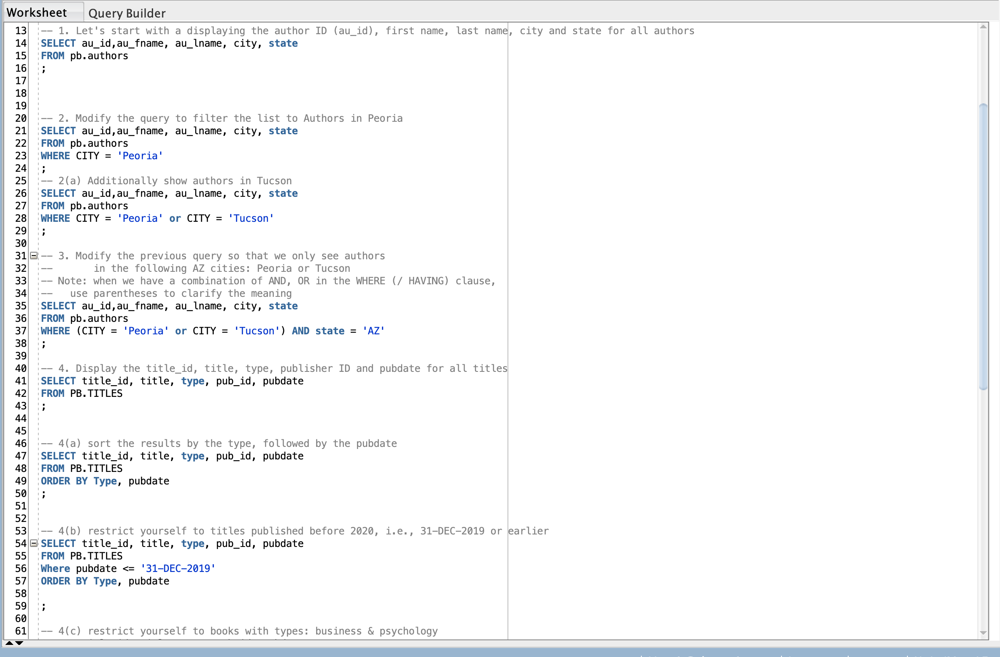

Assistant Manager
Porcinas Dosali S.A. de C.V.
August 2023–Present · Navojoa, Sonora, Mexico
Coordinate daily operations, production, inventory, and staff. Support budgeting and financial record tracking using Excel and CONTPAQi.
I'm Luis Salido, a Management Information Systems student bringing hands-on operations experience and a people-first approach to business.
Explore my experience ↗View résumé ↓Professional portrait to be added.
I study Management Information Systems at the University of Arizona's Eller College of Management, with a minor in Law. My experience spans daily business operations, financial record tracking, customer service, and team leadership.
Working in operations, inventory, and financial record tracking has shown me how much everyday processes affect a team’s time and productivity. These experiences have shaped my interest in making processes more efficient and automating repetitive tasks so people can work better, move faster, and focus on work that needs their judgment. Studying Management Information Systems is helping me connect that practical perspective with the ways technology can improve business operations.
Outside of work and school, you'll find me playing tennis or padel, hiking, water-skiing, following football, and supporting Arizona Athletics.








Porcinas Dosali S.A. de C.V.
Coordinate daily operations, production, inventory, and staff. Support budgeting and financial record tracking using Excel and CONTPAQi.
Discount Tire
Performed tire installation, repair, rotation, and maintenance. Helped customers understand service recommendations and procedures.
Automotriz Sonorense S.A. de C.V.
Tracked inventory and stock levels and supported financial documentation for vehicle sales, financing agreements, and lease contracts.
Lead adventure activities for groups of 15+ children, including water sports, kayaking, cave exploration, and team-building. Direct staff counselors and coordinate safety and activities.
Participate in professional development, networking, and workshops with the Association of Latino Professionals for America, helping build an inclusive community.
Reflections and assessment findings that connect my experiences with my professional development.
Your core values, why they matter to you, and an example of how they guide your decisions.
Explain your results, compare your perspective with feedback from others, and describe what you learned and how you will apply it.
Place full-size screenshots, graphs, survey tables, or feedback here. Include a caption explaining what each item shows.
Your assessment findings, what they reveal about your communication style, and how you apply them.
Explain your results, compare your perspective with feedback from others, and describe what you learned and how you will apply it.
Place full-size screenshots, graphs, survey tables, or feedback here. Include a caption explaining what each item shows.
Your team culture results and feedback, with examples of strengths and areas for improvement.
Explain your results, compare your perspective with feedback from others, and describe what you learned and how you will apply it.
Place full-size screenshots, graphs, survey tables, or feedback here. Include a caption explaining what each item shows.
A specific challenge, what you learned from feedback or practice, and your next steps for growth.
Explain your results, compare your perspective with feedback from others, and describe what you learned and how you will apply it.
Place full-size screenshots, graphs, survey tables, or feedback here. Include a caption explaining what each item shows.
How you see yourself, how you want to be known professionally, and how others experience working with you.
Explain your results, compare your perspective with feedback from others, and describe what you learned and how you will apply it.
Place full-size screenshots, graphs, survey tables, or feedback here. Include a caption explaining what each item shows.
Written, visual, and technology samples will be added here.
Through the TECHO project, we organized fundraisers and activities to raise enough money to build a new home for a single mother and her child. Working together toward this goal showed me how teamwork and community support can make a meaningful difference in a family’s life.

I designed this timeline for a team presentation to help the audience understand Breyers’ history. I organized key milestones using consistent colors, icons, and short descriptions to make the information clear and easy to follow.

Oracle SQL Developer helps me find information in databases by running SQL commands, narrowing down results, and bringing data from different tables together. Working with it has helped me understand how businesses can turn their data into useful answers and make better decisions.
Watch my professional snapshot to learn more about my background and approach to business and technology.
Interested in my background? Let's talk about opportunities
in business, technology, and operations.